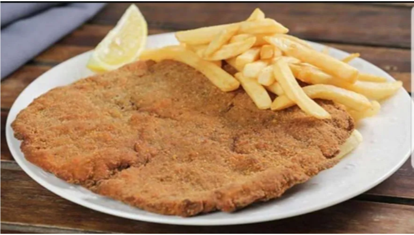

Back to menu
Milanesa con papas fritas

Milanesa de ternera acompañada con papas fritas
Ingredients:
- Carne de ternera, corte a elección. (Prefiera nalga)
- Papas. 1 Kg
- 2 huevos
- Condimentos
- Pan rallado
- Aceite
- Harina
Steps:
- Preparar en una fuente la harina y el pan rallado, separados
- Batir los huevos y mezclarlos con los condimentos
- Cortar la carne del grosor deseado
- Pasar la carne por harina
- Sumergir la carne en el batido
- Pasar la carne por el pan rallado
- Freir
- Las papas fritas se hacen aparte xD